How to set up CRM — from first prospect to first invoice
A complete walkthrough of Ragenaizer CRM. We will build a real sales pipeline from a clean install: configure stages and lead sources, capture a company, attach contacts, run a deal through the kanban, and watch what happens the moment that deal closes Won — the company is auto-promoted to an Accounts customer for billing, with the same UUID flowing across services.
Why a CRM, and what makes this one different
A CRM is the home of your sales pipeline. It captures the people and organisations you are talking to, the conversations you have with them, and the open opportunities you are working to close. Done well, it answers the only two questions sales leadership ever really has — who’s in the funnel, and what’s going to close this quarter.
Ragenaizer CRM looks like the CRMs you already know — Pipeline, Kanban, Companies, Contacts. The difference is what happens at the end of the line. When a deal moves to Won, the CRM does not stop at “congratulations”. It hands the won counterparty over to Accounts as a client_vendor_request for Finance to review. On approval the company appears as a customer in your books, with the same UUID, ready for invoicing. There is no copy/paste between systems and no “Sales said this customer exists; Finance has no record” drift.
Prospect — a company in the CRM that has not yet closed a deal. Lives only in CRM. Customer — same company after a deal Won; now also exists in Accounts under the same id. Promotion — the cross-service event that creates the Accounts customer record from the CRM company on Won.
Pipeline is wide, books are narrow
Sales adds dozens of companies and contacts a day. The vast majority will never become customers. If every one of them hit the Accounts approval queue, Finance would drown in noise about prospects they will never invoice. So we draw the line in the right place:
The thing that makes this work is the shared UUID. When a
CRM company is promoted on Deal Won, CRM passes its company.id
along with the request. Accounts uses that same id for the request and (on
approval) the resulting customer row. From that moment on, deals, proformas
and invoices in Accounts can all FK back to the same identity the salesperson
saw in CRM.
Login & the CRM dashboard
From the Ragenaizer home grid, click into CRM. Every module on the home page is the same shape — pick yours and go.
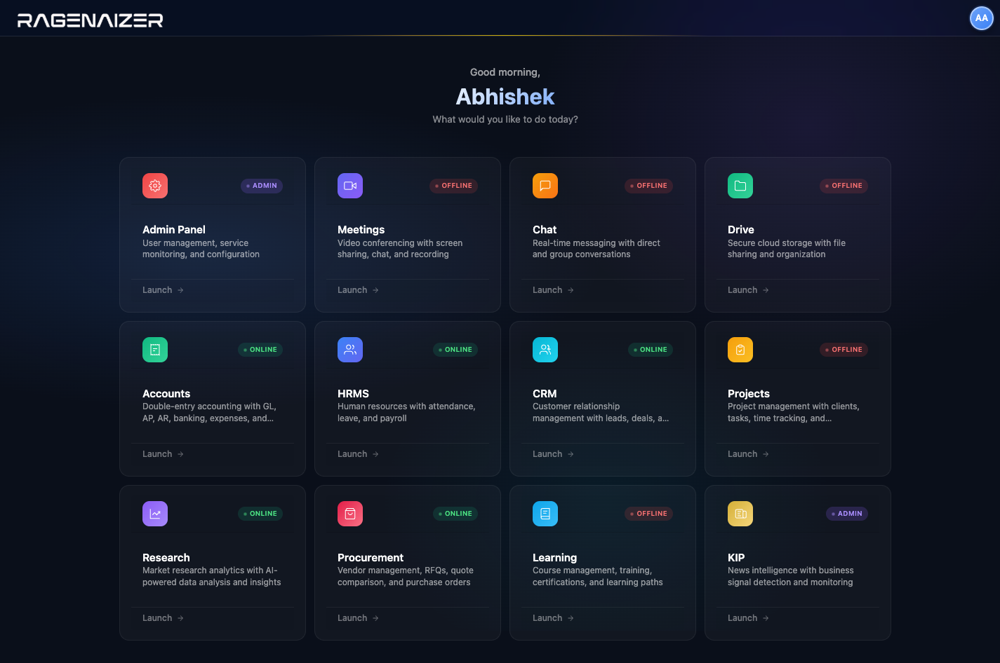
The CRM dashboard opens to a clean board: four KPI tiles at the top (Total Leads, Active Deals, Pipeline Value, Converted Leads), a lead funnel, and a row of Quick Action cards.
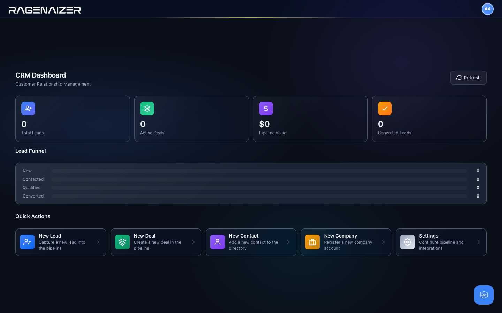
Numbers on the dashboard are read-only and refreshed live. If a tile shows zero when you expect data, hit the Refresh button top-right instead of reloading the page — faster and avoids losing any unsaved work in another tab.
Settings first — the pipeline that everything else hangs from
Resist the urge to jump into Companies. Take five minutes in Settings
→ Pipeline first. The deal stages you define here are referenced from
every deal, every kanban column, and from the cross-service promotion logic
(which fires only when a deal lands in a stage of type won).
Adding a stage later is fine; deciding what they should be is the easy thing
to skip.
4.1 General
The General tab holds the default currency for new deals. Set it to whatever your books are kept in. We leave it at USD ($) for the demo.
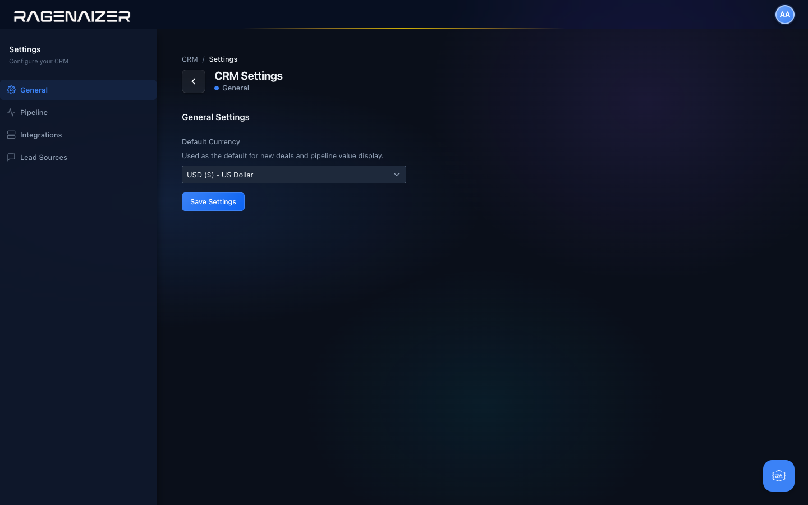
4.2 Pipeline stages
A fresh tenant has zero stages. The kanban won’t render anything until you create at least one Open stage and at least one Won/Lost stage.
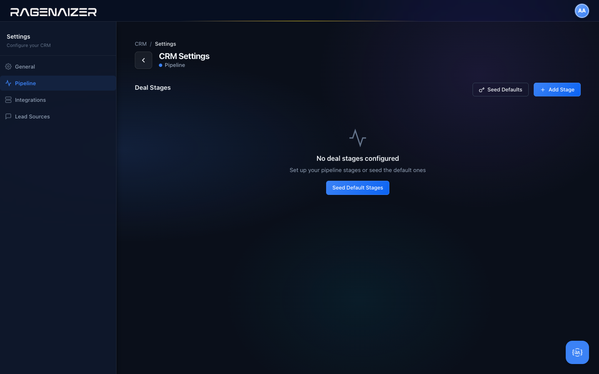
For the demo we click Seed Defaults, which gives us
Qualification → Proposal → Negotiation → Won → Lost. Each stage carries a
stage_type (open / won / lost), a win-probability percent used in
forecast totals, and a colour for the kanban header.
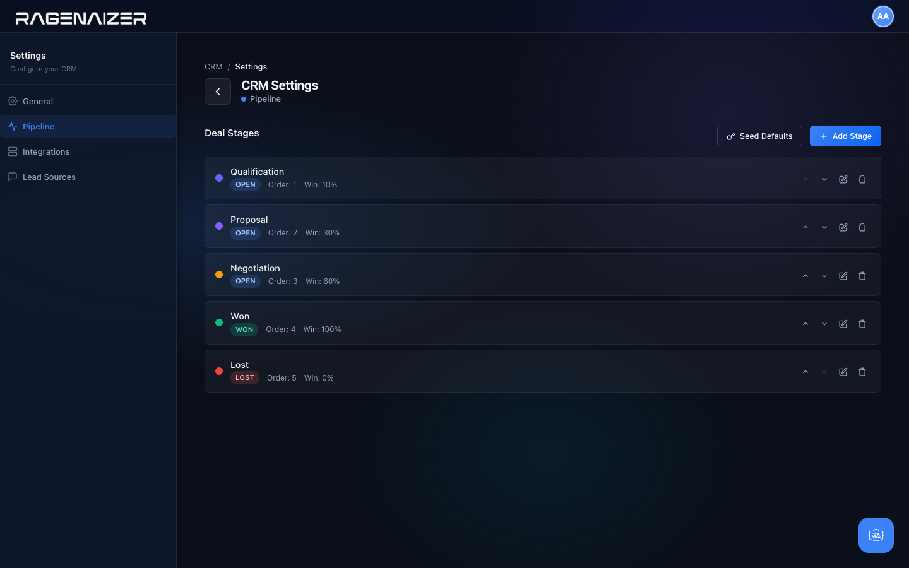
won badges, not off the stage name.You can call a stage anything you want — “Closed Sale”,
“Booked”, “PO Received”. But the promotion to
Accounts only fires when the stage’s stage_type is
won. If you create a custom “Verbally Agreed” stage
and forget to set its type, dropping a deal into it will look like a win in
the kanban but Finance will never hear about it.
4.3 Lead Sources — how leads will arrive
Switch to the Lead Sources tab in the sidebar. A lead source is a configured channel through which leads enter your pipeline: a contact form on your marketing site, a Google Ads landing page, a LinkedIn lead-gen ad, an event scanner app, or just “Manual” for leads someone types in by hand. Each source gets its own webhook URL, so you can wire any external system to drop leads straight into CRM.
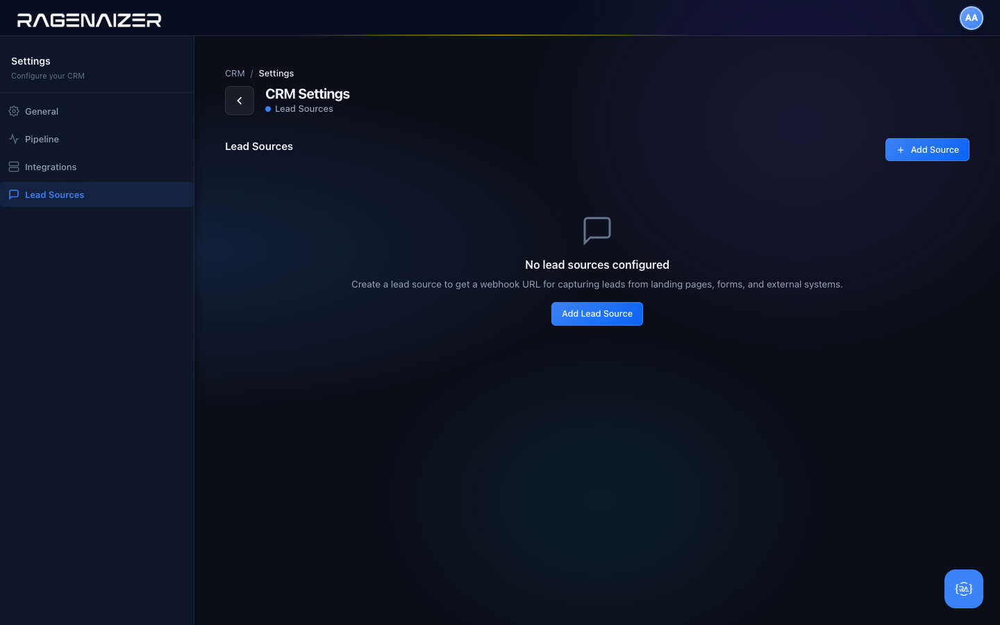
Click + Add Lead Source to open the modal.
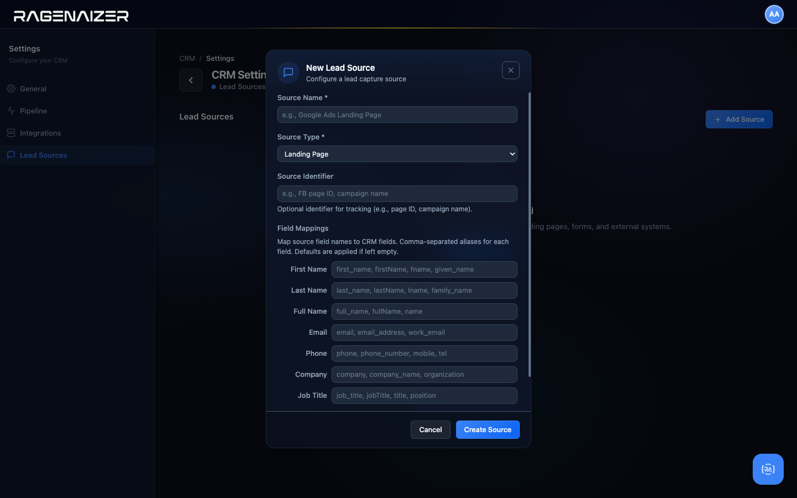
Field mappings tell CRM which incoming JSON field names to interpret as
which CRM fields. The defaults cover almost every form library on the planet
(first_name, firstName, fname,
given_name all map to First Name; same shape for Email, Phone,
Company, Job Title, etc.). If your source uses an oddball field name, add it
to the comma-separated list and CRM will pick it up.
For our demo we’ll create a simple Website Contact Form source:
- Source Name: Website Contact Form
- Source Type: Website
- Source Identifier: northwind-traders.example.com
- Field Mappings: leave defaults
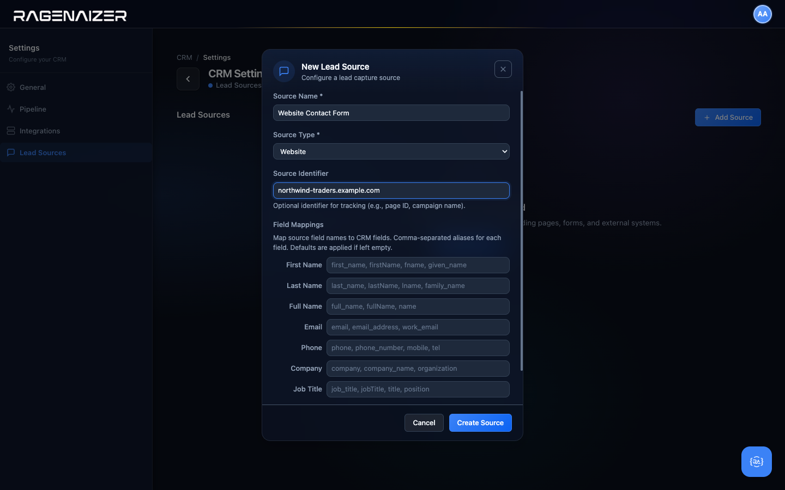
The new source lands in the table with six row actions: Copy URL (the webhook endpoint), Customize Form (the live-preview form designer), Embed Code (snippet to paste on your site), Edit, Regenerate Webhook Key, Delete.
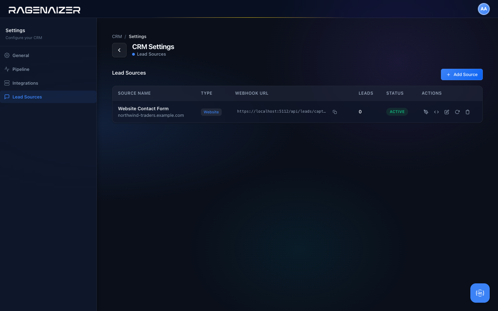
cf5blhdsaw1439… that
authenticates inbound POSTs against this source.4.4 The Embed Code — two ways to paste it on your site
Click the Embed Code action on the row. The dialog gives you two options — the choice depends on how much control you want.
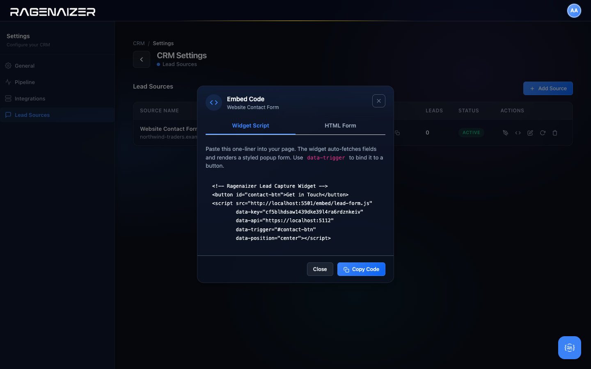
<script> tag you paste anywhere on your page. CRM
auto-renders a styled popup form (designed via the Form Styling editor in
§4.5) and binds it to a button via data-trigger. Best for
marketing sites where you don’t want to touch the page’s own
HTML.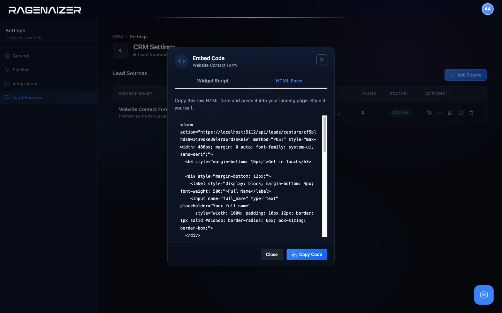
4.5 Form Styling — the live-preview designer
Click the Customize Form action (paintbrush icon) on the source row. You land in a full WYSIWYG form designer.
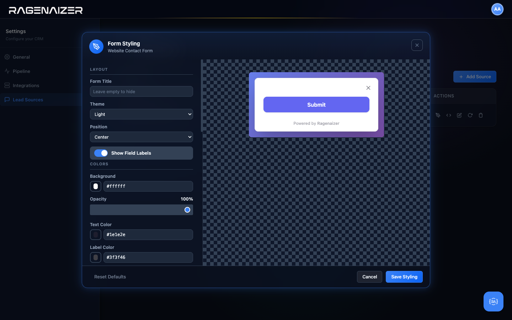
Every change re-renders the preview instantly. The controls cover:
| Group | Knobs |
|---|---|
| Layout | Form Title, Theme (Light/Dark), Position (Center/corners), Show field labels |
| Colors | Background, Opacity, Text, Label, Input fill, Input text |
| Sizing | Form width (desktop), Input height, Button height |
| Button | Background colour, text colour, label text |
| Branding | Logo URL, position (header/footer), height |
| Shape | Border colour, corner radius, frosted-glass effect toggle |
Style the form once per source. Click Save Styling when you’re done — the Widget Script in §4.4 will render the pop-up with these settings on your live site without you touching the embed code again.
One row in deal_stages per pipeline stage. One row in
lead_sources with a unique webhook_key for inbound
auth. The styling JSON lives on the lead-source row itself
(field_mappings + a styling blob). Nothing else has touched
your books yet.
Companies — the prospects in your pipeline
A Company in CRM is any organisation you might one day sell to. It is intentionally cheap to add: name, email, phone, address, and an industry tag. No GST number, no payment terms, no credit limit — those are Finance’s concerns, asked for only at promotion time when it actually matters.
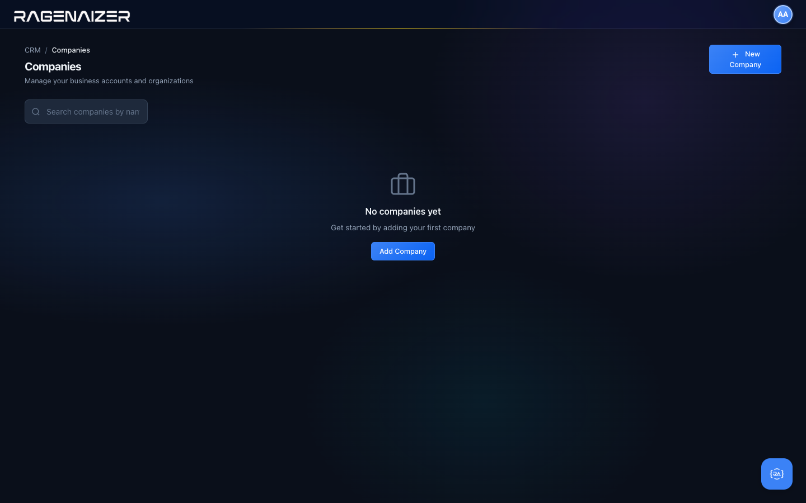
Click Add Company and the modal slides in.
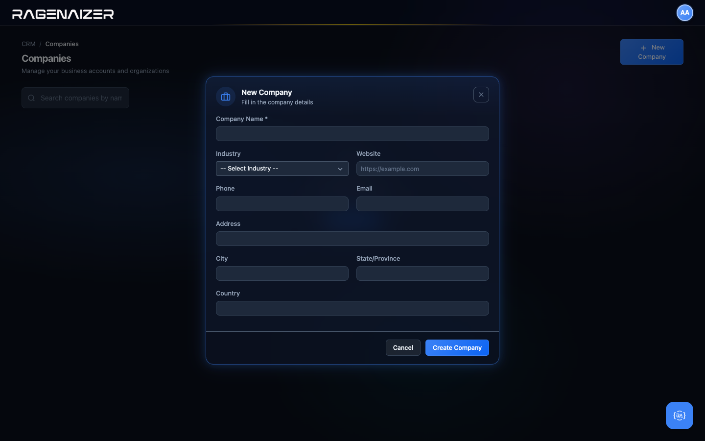
Filling it in for our demo customer:
- Company Name: Northwind Traders Pvt Ltd
- Industry: Retail
- Website: https://northwind-traders.example.com
- Phone: +91-9988776655
- Email: accounts@northwind-traders.example.com
- Address: Unit 304, Tower B, DLF Cyber City
- City / State / Country: Gurugram, Haryana, India
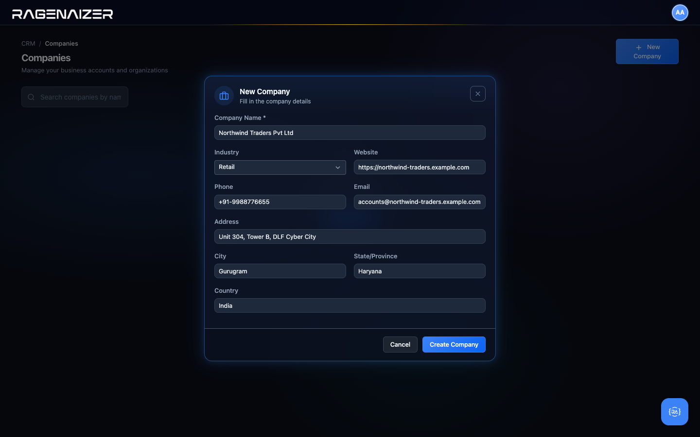
Click Create Company. The row appears immediately in the list with a neutral PROSPECT badge.
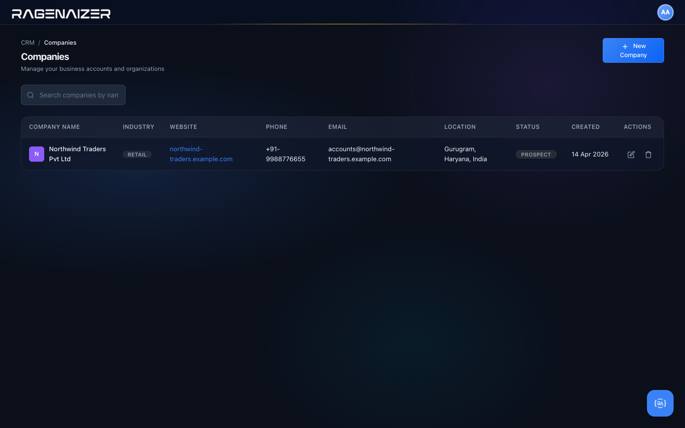
One INSERT into the local CRM companies table.
Zero gRPC calls to Accounts. The CRM company exists as a sales-pipeline
record only — it has no presence in your books yet, and won’t
until a deal closes Won.
Contacts — the people you actually talk to
A Company is an abstraction; deals are won and lost by the humans inside it. A Contact in CRM is one person, optionally attached to one Company. The same person can switch employers without you losing their history — reassign the company link and all their past leads, deals, and notes follow.
Open the Contacts page, click + Add Contact, and fill the form pointing at our Northwind company:
- First / Last Name: Pradeep Kapoor
- Email: pradeep.kapoor@northwind-traders.example.com
- Phone / Mobile: +91-1244567890 / +91-9988776654
- Company: Northwind Traders Pvt Ltd (picked from the dropdown)
- Job Title: Head of Procurement
- Contact Source: Website
Save and the contact lands in the list, joined to its company.
Always fill Job Title. Knowing whether you’re talking to the Head of Procurement, the CTO, or the office manager changes the entire deal motion. Reports later let you slice pipeline by title.
Leads — the top of the funnel
A Lead is a person who has expressed some interest but hasn’t been
qualified yet. They might be a form fill from your website, a name from a
conference, a referral from a partner. Leads have their own status track
(new → contacted → qualified → converted | unqualified) so you
can see at a glance how the top of your funnel is moving.
Click + New Lead on the Leads page and capture an inbound:
- Name: Anita Verma
- Email / Phone: anita.verma@kovid-foods.example.com / +91-9123456789
- Company / Title: Kovid Foods Pvt Ltd, Operations Director
- Lead Source: Website (matches a source we configured in §4)
- Notes: Inbound from website contact form. Looking at our SaaS pricing for a 200-person team. Wants a demo next week.
The lead lands in the table with status NEW. Once you have spoken to them and qualified the opportunity, the row gets a Convert to Contact action that promotes them out of the lead funnel and (optionally) creates a Deal in one shot.
A Lead is unverified interest — we haven’t decided yet whether they belong in our long-term contact list. A Contact is a verified person we maintain a relationship with. A Company is the organisation behind that contact. Leads convert into a Contact (and usually a Deal) once you decide they’re real.
Deals — money in motion
A Deal is the actual revenue opportunity. Deal Name, Deal Value, Currency, Stage, Expected Close Date, and (most importantly) the Company it is for. Open the Deals page and you land on the Kanban view: one column per pipeline stage, drag a card across columns to move it through the funnel.
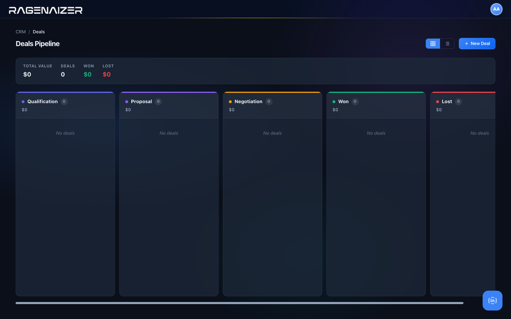
Click + New Deal and create one for Northwind:
- Deal Name: Northwind — Annual SaaS Subscription
- Deal Value: 480000 (in the currency from §4.1)
- Stage: Proposal (we’re past initial qualification)
- Expected Close Date: 2026-05-15
- Company: Northwind Traders Pvt Ltd (picked from the dropdown)
- Notes: 3-year contract, 200 seats, dedicated CSM. Closing this quarter.
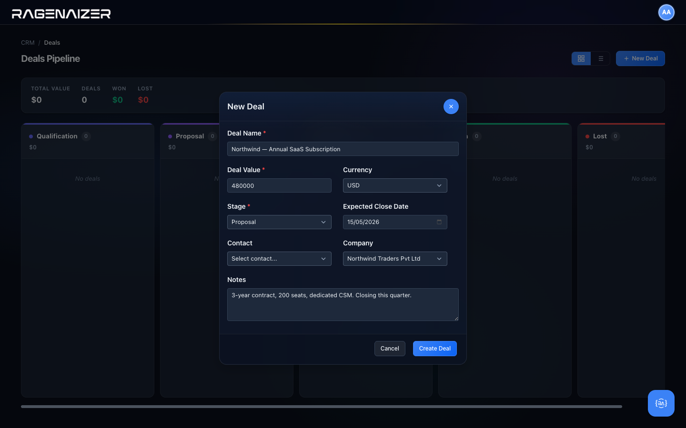
company.id through to the Won
promotion.Save and the card lands in the Proposal column.
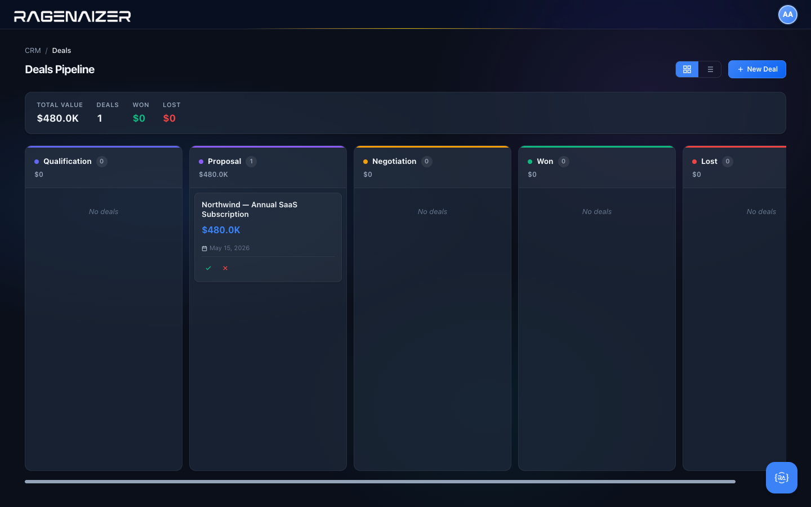
Drag the card from Proposal into Negotiation. The change is persisted instantly — no Save button.
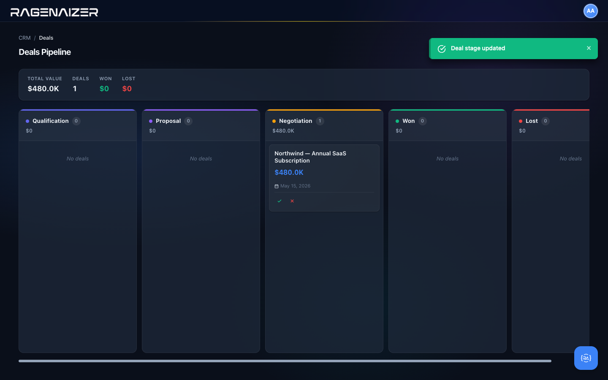
Drag the card into the Won column, OR click
Mark as Won on the card. Both paths trigger the same
cross-service promotion logic — CRM checks the destination
stage’s type, and if it is won, fires the request to
Accounts. Lost works the same way (closes the deal but no Accounts call).
Closing the deal — promotion to Accounts
Drag the Northwind card from Negotiation into Won. To the salesperson, the only visible thing is a “Deal stage updated” toast and the card landing in the Won column. Behind the scenes a chain of events fires.
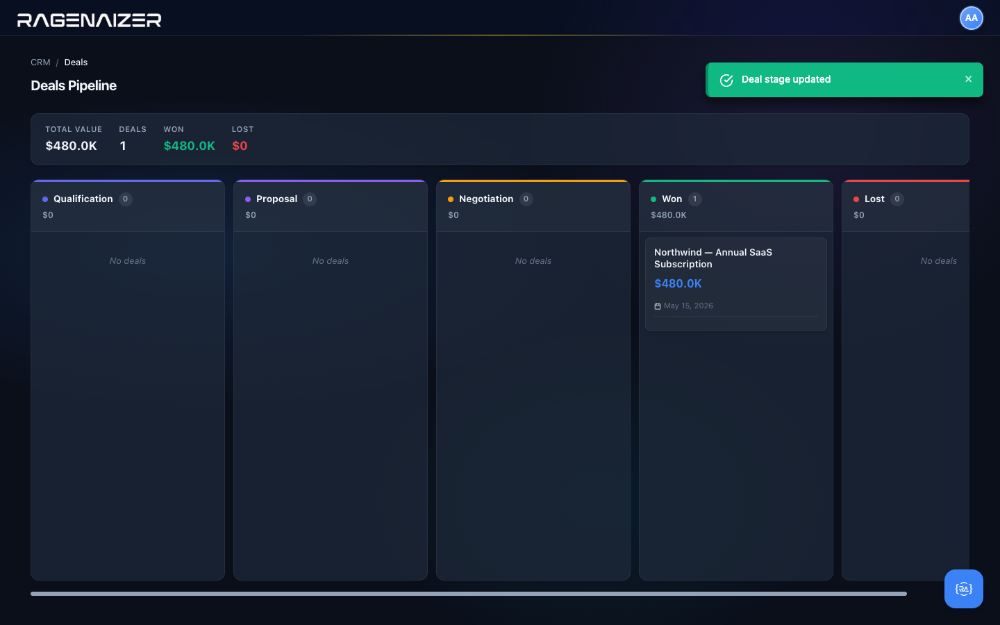
9.1 What just happened across the wire
- CRM updated the deal’s
stage_idto the Won stage and setactual_close_dateto today. - Because the new stage is type
won, CRM calledTryPromoteCompanyToAccountsAsync(company.id). - That helper checked — via gRPC — whether Accounts already had
a customer with id
e5879ca3-…(Northwind’s CRM company id). It did not. - So CRM submitted a
client_vendor_requestto Accounts, explicitly passingclient_id = company.idso the same UUID flows through. - Accounts inserted a row in
client_vendor_requestswithstatus = pending,requested_from_service = "CRM", and the same ide5879ca3-…. A 48-hour SLA timer started.
None of this blocked the salesperson’s win. The promotion is best-effort — if Accounts is down, the deal still goes Won; the promotion is logged as a non-blocking warning.
9.2 Finance reviews the request
Switch to Accounts → Vendors & Customers. The sidebar shows a 1 badge next to Pending Customers — that’s our Northwind request waiting for review.
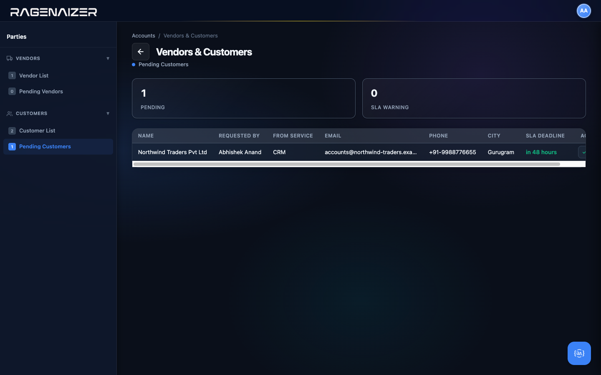
Click the green check. Accounts opens an Approve Request
modal pre-filled with everything CRM sent. The one field that’s blank is
Tax ID (GST/PAN) — that’s a Finance concern that
CRM never collected. Fill it in (we use 06AABCN1234E1ZF) and
click Approve & Create.
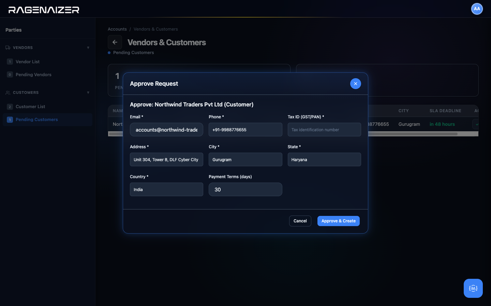
9.3 The customer appears in the books
Behind the modal, Accounts:
- Updated the request’s
statustoapproved. - Auto-generated the next customer code (CUST-0001).
- Inserted a row into
customersusingrequest.idas the customer id — which equals the original CRMcompany.idfrom step 4 above. Same UUID throughout.
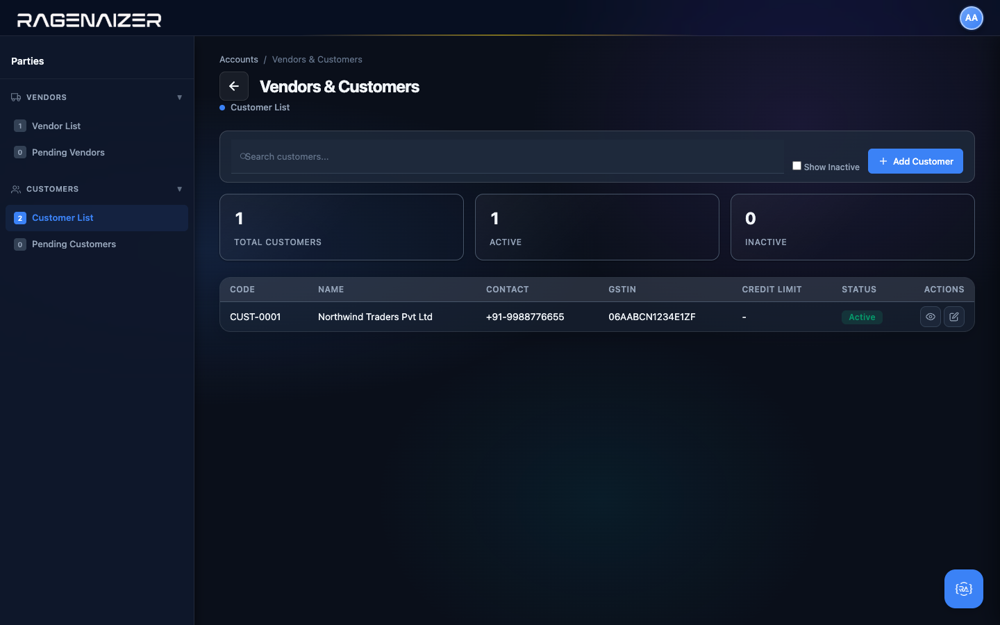
9.4 Round-trip closes in CRM
Switch back to CRM → Companies. Northwind’s Status badge has flipped from neutral PROSPECT to green CUSTOMER. The flip happens automatically the next time the CRM page reads its companies list — CRM cross-checks Accounts for any matching customer ids and renders the badge accordingly.
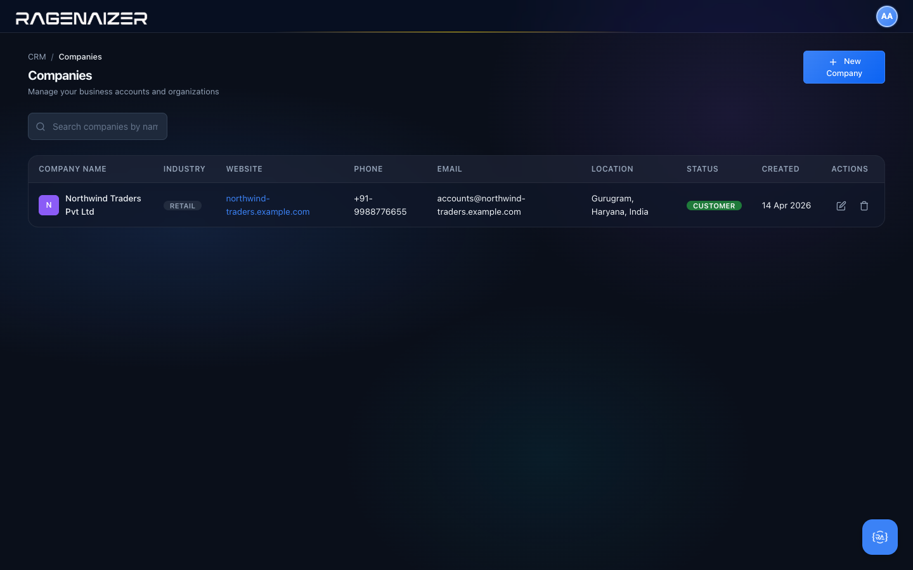
e5879ca3-…
— is identical to the id Accounts is using for CUST-0001. No
drift.Three rows now share the UUID e5879ca3-…: the CRM
companies row, the Accounts client_vendor_requests
row (now status=approved), and the Accounts customers row. Any
future deal, proforma, or invoice in either system can FK back to this
single identity. Sales and Finance see the same counterparty without ever
talking about “the customer record”.
Glossary
| Term | Meaning |
|---|---|
| Pipeline | The set of deal stages. A tenant can have many pipelines (e.g. New Business, Renewals); the default one is “Default”. |
| Stage | One column on the kanban. Has a stage_type (open/won/lost) and a win_probability percent used in forecast totals. |
| Lead Source | A configured channel through which leads arrive (Website Contact Form, Google Ads, LinkedIn, etc.). Each gets a webhook URL for inbound automation. |
| Lead | An unqualified person of interest. Has its own status track (new → contacted → qualified → converted | unqualified) and converts into a Contact + Deal. |
| Company | An organisation in the CRM. Local-only by default. Status is Prospect until promoted to an Accounts customer. |
| Contact | A person inside a Company. Holds the relationship history. |
| Deal | A revenue opportunity for a Company. Lives on the kanban; has a value, expected close date, and stage. |
| Promotion | The cross-service event fired when a deal moves to a stage of type won. CRM submits a client_vendor_request to Accounts. |
| Customer | A Company that has been promoted and approved in Accounts. Same UUID as the CRM company. Eligible for invoicing. |
| client_vendor_request | The Accounts-side row created by promotion. Has status pending / approved / rejected and a 48-hour SLA. Approval generates the customer (or vendor) record. |
| CUST-NNNN | The auto-generated customer code in Accounts (or VEND-NNNN for vendors). Tenant-scoped monotonic. |